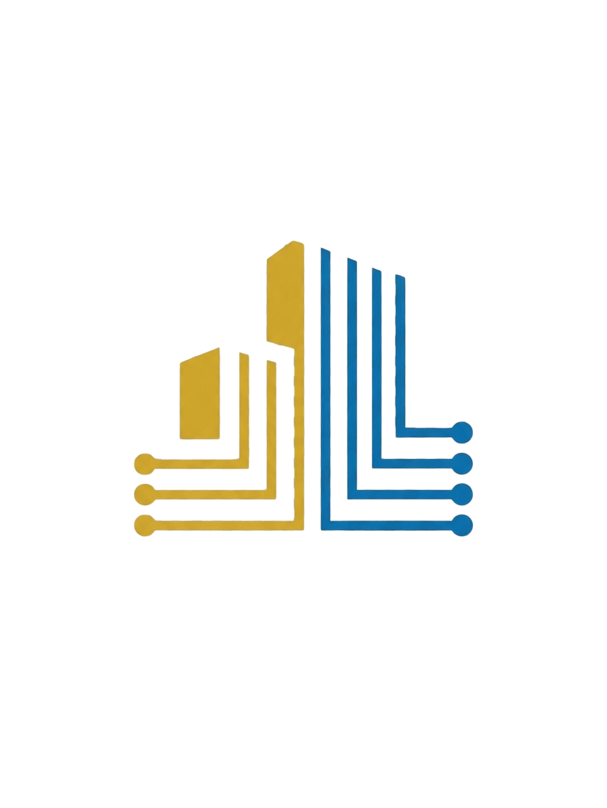

EDS Edificaciones Inteligentes

Empresa dedicada a desarrollar proyectos de construcciones con enfoque tecnológico, sistemas de comunicación, seguridad electrónica e Internet de las cosas. Más de una década transformando el sur del Perú.